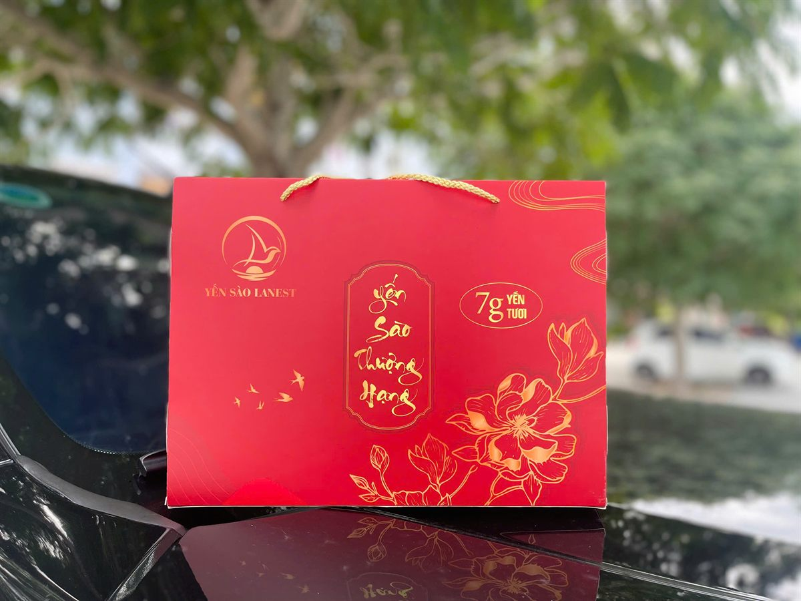
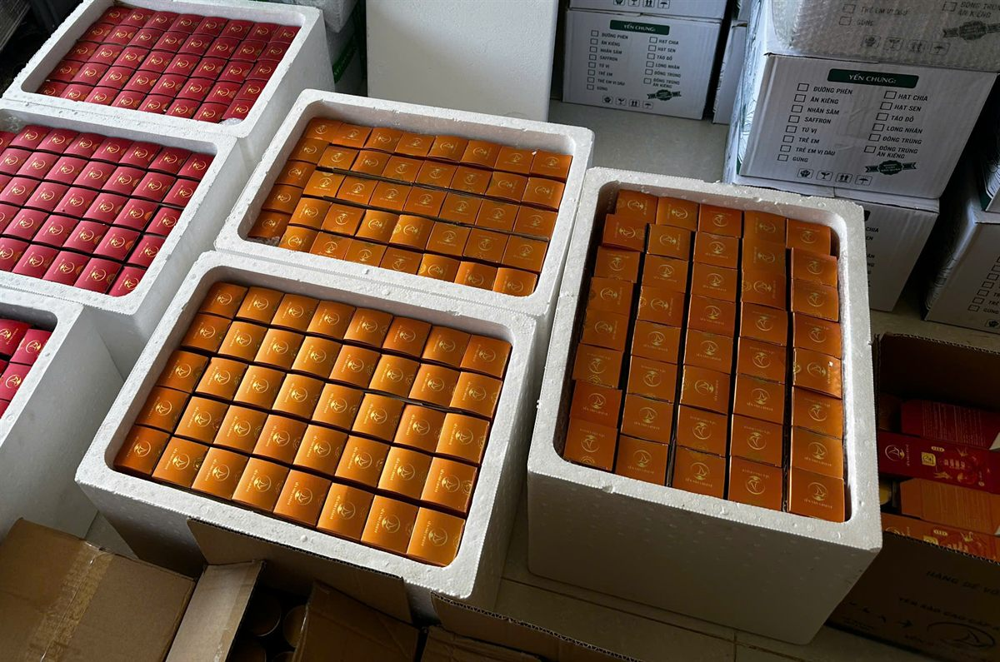

Quà Tết Yến Sào Cho Doanh Nghiệp: Cẩm Nang Chuẩn Bị Từ Sớm
Yến Sào Lanest · Đăng ngày 04/11/2026

Với nhiều công ty, quà Tết là lời cảm ơn gửi tới đối tác, khách hàng và anh chị em nhân viên sau một năm làm việc. Chọn quà Tết yến sào cho doanh nghiệp là chọn một món quà sức khỏe, trang trọng khi trao tay và dùng được thật trong nhà. Bài này đi theo trình tự: lên kế hoạch, chọn hộp theo người nhận, đặt hàng số lượng lớn, giao hàng và hạn dùng.
Hộp quà đỏ "Yến Sào Thượng Hạng", yến hũ 7g yến tươi, có quai xách
1. Vì sao doanh nghiệp nên chuẩn bị quà Tết từ sớm?
Đơn quà Tết doanh nghiệp thường có nhiều phần quà, nhiều người nhận. Đặt sớm giúp anh chị đủ thời gian cho từng bước:
- Xem mẫu thật: Lanest thường xuyên làm mới mẫu hộp, nên mẫu mỗi mùa có thể khác ảnh trên web.
- Chốt danh sách và cách phối vị: mỗi nhóm người nhận có thể cần một kiểu hộp, kiểu phối vị riêng.
- Xác nhận đơn và đặt cọc: nhân viên xác nhận trong vòng 12 giờ làm việc; đơn chỉ được xử lý sau khi xác nhận và hoàn tất thanh toán hoặc đặt cọc.
- Thời gian giao: tùy khu vực, hàng đi từ 1 đến 5 ngày. Đơn được xử lý trong giờ hành chính, 08:00–17:30, Thứ 2 đến Thứ 7.
2. Các mẫu hộp quà yến cho mùa Tết
Chi tiết từng hộp có trong bài gợi ý chọn set quà biếu yến sào; dưới đây là bản tóm tắt cho đơn doanh nghiệp.
| Mẫu quà | Bên trong | Hợp với |
| Set hộp quà cao cấp | Mẫu hộp quà Tết | Đối tác, khách hàng quan trọng |
| Hộp quà đỏ 6 hũ, 10 hũ (có túi rời) | Yến hũ chưng 7g yến tươi | Khách hàng, đối tác, nhân viên |
| Hộp quà xanh 6, 8, 10 hũ | Yến hũ chưng 7g yến tươi | Nhân viên, khách hàng thân thiết |
| Hộp quà kem 6, 10 hũ (kèm túi ngoài) | Bản 10 hũ phối 10 vị khác nhau | Người nhận thích đổi vị |
| Hộp đỏ dòng nguyên chất 100% | Hũ 70ml, 1,5g tổ yến mỗi hũ; vị đường phèn, đông trùng hạ thảo, gừng | Lãnh đạo, đối tác cần quà chỉn chu |
| Yến tinh chế hộp 50g, 100g | Tổ yến đã làm sạch, hộp hút ẩm | Người quen tự chưng yến ở nhà |
Giá phụ thuộc mẫu hộp, số hũ và số lượng đặt, anh chị liên hệ hotline để được báo cụ thể.
3. Chọn hộp quà theo đối tượng nhận
Một đơn quà Tết doanh nghiệp hiếm khi chỉ có một loại. Cách chia đơn giản là theo nhóm người nhận:
- Đối tác, lãnh đạo: ưu tiên set hộp quà cao cấp hoặc hộp đỏ dòng nguyên chất 100%, loại không chất bảo quản, không phẩm màu. So sánh trong bài yến hũ nguyên chất và yến hũ 7g.
- Khách hàng thân thiết: hộp đỏ hoặc hộp xanh 6–10 hũ yến chưng 7g yến tươi, phối nhiều vị để cả nhà người nhận cùng dùng.
- Nhân viên: hộp 6 hũ gọn, dễ mang về quê ăn Tết. Có thể phối vị riêng theo từng phòng ban.
- Người nhận có người nhà cần hạn chế đường: nhờ phối vị đường ăn kiêng hoặc đông trùng hạ thảo đường ăn kiêng, và nhắc người nhận hỏi bác sĩ nếu đang điều trị bệnh.
Yến hũ 7g hiện có 14 vị, xem gợi ý chọn vị trong bài 14 vị yến chưng, chọn vị nào. Nếu chưa biết người nhận thích gì, đường phèn là vị dễ dùng nhất.
4. Quy trình đặt quà Tết số lượng lớn
Đơn doanh nghiệp đi theo cùng chính sách đặt hàng của Lanest, chỉ cần chuẩn bị kỹ hơn một chút:
- Liên hệ đặt hàng qua hotline/Zalo CSKH 0258 6278 627, fanpage Yến Sào Lanest, website lanest.com.vn hoặc đại lý gần nhất.
- Gửi đủ thông tin: tên sản phẩm và số lượng từng mẫu hộp, cách phối vị, họ tên người nhận, số điện thoại, địa chỉ giao và ghi chú đặc biệt nếu có.
- Báo ngay nếu cần hóa đơn VAT: giá bán lẻ đã gồm VAT 8%. Doanh nghiệp cần hóa đơn VAT thì cung cấp thông tin công ty ngay khi đặt hàng, nếu không hóa đơn sẽ xuất theo khách lẻ.
- Xác nhận và đặt cọc: nhân viên xác nhận đơn trong vòng 12 giờ làm việc. Thanh toán trước bằng chuyển khoản được khuyến khích; với đơn đặc biệt, làm theo yêu cầu hoặc số lượng lớn, mức đặt cọc là 30–50% giá trị đơn hàng.
- Chọn phụ kiện: ngoài hộp còn có túi xách, vỏ hộp rời 1 hũ và thiệp chúc để anh chị ghi lời gửi tới người nhận.
Chuyện hóa đơn, người sáng lập Lanest có lần kể về quyết định chuyển lên công ty để làm đúng từ đầu:
"mặc dù là rất là nhiều doanh nghiệp vẫn còn đang không có xuất phát hóa đơn á thì bên mình tâm niệm là bên mình sẽ làm đúng nhất có thể."

Hộp yến Lanest xếp trong thùng xốp, chờ đóng kiện giao đi
5. Giao hàng và kiểm hàng khi nhận
- Phạm vi: giao toàn quốc qua Giao Hàng Nhanh, Viettel Post. Cam Ranh, Nha Trang và một số tỉnh có đại lý có thể giao trong ngày; tỉnh khác 2–5 ngày làm việc. Tuyến có chành xe thì có thể gửi chành.
- Phí giao: miễn phí cho yến tinh chế từ 200g hoặc yến hũ từ 3 thùng. Đơn khác tính theo kích thước, trọng lượng, báo khi xác nhận đơn.
- Kiểm khi nhận: đơn COD được kiểm tra trước khi thanh toán: tem niêm phong, số lượng, hạn sử dụng, bao bì. Hàng móp, vỡ, thiếu hoặc sai loại thì có quyền từ chối nhận và báo hotline.
- Đổi trả: trong 15 ngày kể từ ngày nhận hàng và không quá hạn sử dụng, với lỗi như vỡ, rò rỉ, giao sai. Nên quay video lúc mở thùng.
6. Hạn sử dụng và bảo quản: điều nên dặn người nhận
Quà Tết thường được cất vài tuần mới mở, nên hạn dùng là điều doanh nghiệp nên để ý:
- Yến hũ chưng 7g yến tươi: ngày sản xuất và hạn dùng in trên bao bì, khi đặt quà nên hỏi Lanest lô hàng còn hạn tới khi nào. Bảo quản nhiệt độ thường, nơi khô ráo, thoáng mát. Lắc nhẹ trước khi uống, ngon hơn khi uống lạnh.
- Hũ nguyên chất 100%: xem ngày sản xuất, hạn dùng in trên bao bì; mở nắp dùng ngay, ngon hơn khi uống lạnh.
- Yến tinh chế: hạn sử dụng 24 tháng kể từ ngày sản xuất theo hồ sơ tự công bố, khi hộp còn nguyên. Cách cất sau khi mở hộp có trong bài cách bảo quản tổ yến.
Lanest có chứng nhận ISO 22000:2018, yến được làm sạch bởi đội thợ riêng qua 4 chốt kiểm trước khi đóng hộp.
Câu hỏi thường gặp
Công ty đặt quà Tết có xuất được hóa đơn VAT không?
Được. Anh chị gửi thông tin công ty ngay khi đặt hàng để Lanest xuất hóa đơn VAT; giá bán lẻ đã gồm VAT 8%.
Đơn quà số lượng lớn có phải đặt cọc không?
Có, mức cọc 30–50% giá trị đơn hàng.
Giá quà Tết doanh nghiệp là bao nhiêu?
Giá phụ thuộc mẫu hộp, số hũ và số lượng. Anh chị gọi 0258 6278 627 hoặc nhắn fanpage Yến Sào Lanest để được báo giá và xem mẫu hộp mùa này. Xem thêm quy trình chung trong bài mua yến tại Lanest: đặt hàng, giao hàng, đổi trả.